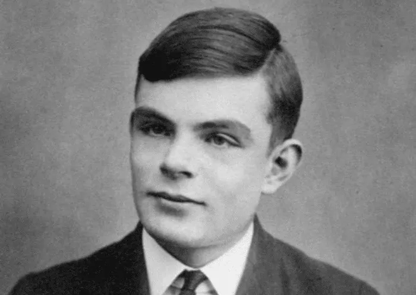
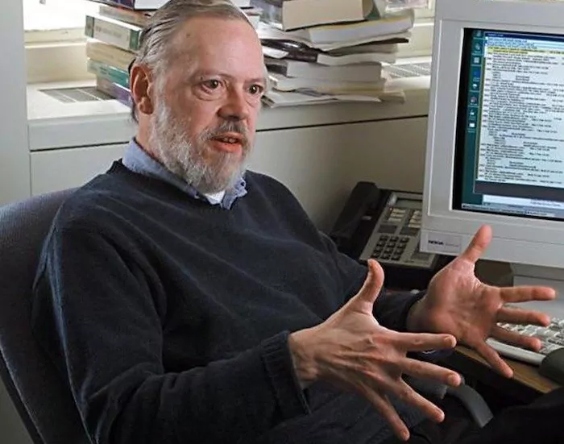

Ученные, изменившие компьютерный мир
Алан Мэтисон Тьюринг

Кто он: Алан Тьюринг — математик, криптоаналитик и логик. Его называют отцом теоретической информатики и искусственного интеллекта. Что он сделал: во время Второй мировой войны он разработал множество методов взлома немецких шифров. Тьюринг построил электромеханическую машину, которая могла найти настройки машины Энигмы. Он формализовал концепции вычислений и алгоритмов с помощью машины Тьюринга, машины, которая может быть адаптирована для симуляции логики любых алгоритмов. Основные достижения: он был удостоен премии Смита, офицера Ордена Британской империи и члена Королевского общества. С 1966 года Ассоциация вычислительной техники ежегодно присуждает премию Тьюринга за вклад в вычислительное сообщество.
Деннис Ритчи

Кто он: Деннис Ритчи был революционным ученым-компьютерщиком, который сыграл ключевую роль в разработке языка программирования «С» и операционной системы Unix. Он работал в Lucent Technologies & Bell Labs и защитил кандидатскую диссертацию на тему «Структура программы и вычислительная сложность». Тем не менее он никогда официально не получил докторскую степень. Что он сделал: Он разработал язык программирования «C», на котором основаны многие используемые в настоящее время машинный язык и технологии, включая ваш PS4 / Xbox. Ричи создал многопользовательскую операционную систему под названием Unix. Он также известен разработкой ALTRAN, B, BCPL и Multics. Основные достижения: Ричи был удостоен премии Тьюринга, медали Хэмминга от IEEE, премии компьютерных пионеров, стипендиата Музея истории компьютеров и премии Гарольда Пендера.
-
Тим Бернерс-Ли
Кто он: Тим Бернерс-Ли — ученый-компьютерщик, наиболее известный как изобретатель Всемирной паутины. Он является директором W3C, Инициативы Web Science Research, а также старшим научным сотрудником и заведующим кафедрой основателей (MIT). Что он сделал: в 1989 году Тим сделал предложение по системе управления информацией, и он успешно реализовал связь между HTTP-клиентом и сервером через Интернет. Он также является ключевой фигурой в data.gov.uk, правительственном проекте Великобритании по открытию всех данных, полученных для официальной работы, для свободного повторного использования. Основные достижения: Тим был посвящен в рыцари королевой Елизаветой II за выдающуюся работу, удостоен награды Software System Award, Гордости Британии и Молодого новатора года (1995).